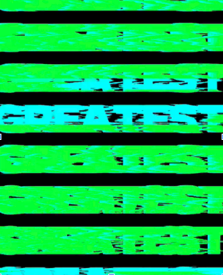
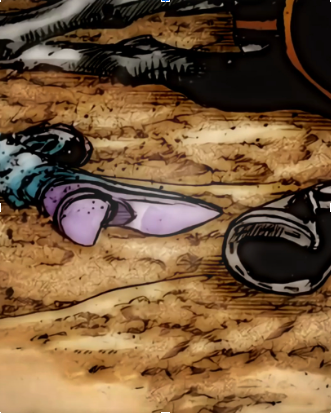

This class to me has become something I can enjoy. While its not something I may want to do for the rest of my life, It is something I have considered teaching. I like the way it feels to watch a webpage come together and function perfectly. I like adding in special features and seeing it be displayed on my screen. This is a class I've also found that I learn quickluy in. Giving me the confidence to help those around me to teach them how to do the worl correctly.
I mostly enjoy 3 main things. I enjoy watching anime and editing said anime, I enjoy playing Video Games, and finally enjoy going to the gym. Editing anime is a very fun hobby i picked up about a year ago from now. It was something that I wasn't always good at but still enjoyed doing it. Now I post the videos online and have a decent following and have even had some videos blow up and gains hundreds and thousands of views. The link for the page will be below: Video games has been a hobby if not a love of mine for as long as I can rememeber. Its helped me sustain friendships with friends from elemtary school and has helped me get through some tough times in lfe. It's a key part of who I am. The gym is something I started about a year ago as well and is something that while I havent always been consistent its something I value a lot and have noticed a decent change in my physical appearence and abilities.
I would like to be a teacher. To me I have always lovd Global history, but I simply enjoy the concept of Teaching. I want to help kids learn and understand new things in ways that allow them to have fun while learning and also understand what their learning. I plan on being a teacher once I finish Highschool and eventually may want to be a principle, while I think teaching may be what I really want to do.
Tik-Tok Profile
 